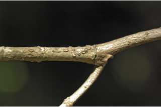
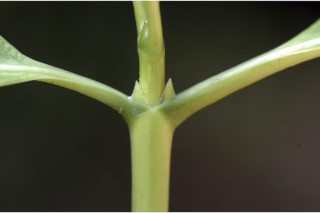
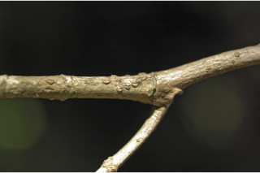
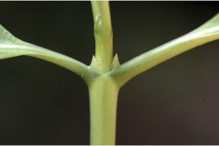
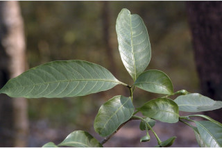
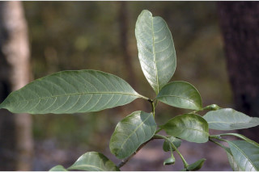

Deciduous trees, up to 8 m tall.
8ಮೀ ಎತ್ತರದವರೆಗೆ ಬೆಳೆಯುವ ಎಲೆಯುದುರ ಸ್ವಭಾವವುಳ್ಳ ಪೊದೆಗಳು.
8 മീറ്റര് വരെ ഉയരത്തില് വളരുന്ന, ഇലപൊഴിയും മരങ്ങള്.
இலையதிர் மரம், 8 மீ. உயரம் வரை வளரக்கூடியது.
Bark grey, scaly, blaze pinkish cream.
ತೊಗಟೆ ಬೂದು ಬಣ್ಣ ಹೊಂದಿದ್ದು ಚಕ್ಕೆಯುಕ್ತ ಮಾದರಿಯಲ್ಲಿರುತ್ತವೆ. ಕಚ್ಚು ಮಾಡಿದ ಜಾಗ ನಸುಗೆಂಪು ಬಣ್ಣವಿರುತ್ತದೆ.
പുറംതൊലി നരച്ചതും, ശലക്കങ്ങളോടു കൂടിയതുമാണ്; വെട്ട്പാടിന് ക്രീം നിറം.
மரத்தின் பட்டை சாம்பல் நிறமானது, சிறு செதில்களாக உரியக்கூடியது; உள்பட்டை பிங்க் கலந்த கிரீம் நிறமானது.
Branchlets terete, glabrous.
ಕಿರುಕೊಂಬೆಗಳು ಗುಂಡಾಕಾರದಲ್ಲಿದ್ದು ರೋಮರಹಿತವಾಗಿರುತ್ತವೆ.
ഉപശാഖകള് ഉരുണ്ടതും, അരോമിലവുമാണ്.
சிறிய நுனிக்கிளைகள் குறுக்குவெட்டுத் தோற்றத்தில் வளையமானது, உரோமங்களற்றது.
Latex milky white.
ಜಿನುಗುದ್ರವ ಹಾಲಿನ ಶ್ವೇತ ಬಣ್ಣದ್ದಾಗಿರುತ್ತದೆ.
സ്രവം പാല്പോലെ വെളുത്തതാണ്.
வெள்ளை நிறமான பால் போன்றது.
Leaves simple, opposite, pairs unequal, decussate; petiole 0.6-2 cm long with a short clasping sheath at base; lamina 10-25 x 3-8.5 cm, narrow elliptic, apex caudate acuminate, base acute or attenuate with decurrent, margin entire, subchartaceous, glabrous; secondary_nerves 8-15 pairs; tertiary_nerves reticulate.
ಎಲೆಗಳು ಸರಳ ಹಾಗೂ ಅಸಮರೂಪಿಗಳಾಗಿದ್ದು ಅಭಿಮುಖಗಳಾಗಿ ಕತ್ತರಿ ಮಾದರಿಯ ಜೋಡನಾ ವ್ಯವಸ್ಥೆಯಲ್ಲಿರುತ್ತವೆ; ಎಲೆತೊಟ್ಟು 0.6 ರಿಂದ 2 ಸೆಂ.ಮೀ. ಉದ್ದವಿದ್ದು ಬುಡದಲ್ಲಿ ಕಿರಿದಾದ ಅಪ್ಪು ಒರೆಯನ್ನು ಹೊಂದಿರುತ್ತದೆ; ಪತ್ರ 10-25 x 3-8.5 ಸೆಂ.ಮೀ. ಗಾತ್ರ ಹೊಂದಿದ್ದು ಅಂಡವೃತ್ತಾಕೃತಿಯಲ್ಲಿದ್ದು ಬಾಲರೂಪಿಯಾಗಿ ಕ್ರಮೇಣ ಚೂಪಾಗುವ ತುದಿ ಹಾಗೂ ಚೂಪಾದ ಅಥವಾ ಒಳಬಾಗಿದ ಮತ್ತು ಕಾಂಡದವರೆವಿಗೂ ವಿಸ್ತರಿಸುವ ಎಲೆಬುಡ ಹೊಂದಿರುತ್ತದೆ. ಎಲೆಯಂಚು ನಯವಾಗಿದ್ದು, ಮೇಲ್ಮೈ ಕಾಗದವನ್ನು ಹೋಲುತ್ತದೆ ಹಾಗೂ ರೋಮರಹಿತವಾಗರುತ್ತದೆ; ಎರಡನೇ ದರ್ಜೆಯ ನಾಳಗಳು 8 ರಿಂದ 15 ಜೋಡಿಗಳಿರುತ್ತವೆ; ಮೂರನೇ ದರ್ಜೆಯ ನಾಳಗಳು ಜಾಲಬಂಧನಾಳ ವಿನ್ಯಾಸದವು.
ലഘുവായ ഇലകള്, സമ്മുഖമായി, അസമ ജോഡികളായി ഡെക്കുസേറ്റ് ക്രമത്തില്; ഇലഞെട്ട് 0.6 മുതല് 2 സെ.മി വരെ നീളമുള്ളതും, കീഴറ്റത്ത് ഇറുകി നില്ക്കുന്ന ഒരു ചെറിയ പോള ഉള്ളതുമാണ്; പത്രഫലകത്തിന് 10 സെ.മി മുതല് 25 സെ.മി വരെ നീളവും, 3 മുതല് 8.5 സെ.മി വരെ വീതിയും, ആകൃതി വീതികുറഞ്ഞ ദീര്ഘവൃത്താകാരവുമാണ്; പത്രാഗ്രം വാലോട് കൂടിയതും, പത്രാധാരം കൂര്ത്തതോ നേര്ത്തവസാനിക്കുന്ന ഡെക്കറന്റ് രീതിയിലോ ആണ്, അരികുകള് അവിഭജിതമാണ്, ഏതാണ്ട് കടലാസു പോലത്തെ പ്രകൃതവും അരോമിലം; ദ്വിതീയ ഞരമ്പുകള് 8 മുതല് 15 വരെ ജോഡി; ത്രിതീയ ഞരമ്പുകള് ജാലിതമാണ്.
இலைகள் தனித்தவை, எதிரடுக்கமானவை, குறுக்குமறுக்கமானவை, ஒர் கனுவிலுள்ள ஜோடி இலைகள் சமமற்றவை; இலைக்காம்பு 0.6-2 செ.மீ. அதன் தளம் அகன்று தண்டை சுற்றிய உறை போன்று காணப்படும்; இலை அலகு 10-25 X 3-8.5 செ.மீ. குறுகிய நீள்வட்டம், அலகின் நுனி வால் போன்று அதிக்கூரியது, அலகின் தளம் கூரியது அல்லது அட்டனுவேட் மற்றும் டெக்கரண்ட், அலகின் விளிம்பு முழுமையானது, சார்ட்டேசியஸ், கீழ்பரப்பு உரோமங்களற்றது; இரண்டாம் நிலை நரம்புகள் 8-15 ஜோடிகள்; மூன்றாம் நிலை நரம்புகள் வலைப்பின்னல் போன்றது.
Flowers in terminal cymes, white, fragrant.
ಹೂಗಳು ಸುವಾಸನಾಯುಕ್ತ ಹಾಗೂ ಶ್ವೇತ ಬಣ್ಣ ಹೊಂದಿದ್ದು ತುದಿಯಲ್ಲಿನ ಮಧ್ಯಾರಂಭಿ ಪುಷ್ಪಮಂಜರಿಯಲ್ಲಿರುತ್ತವೆ.
വെളുത്ത നിറത്തിലുള്ളതും, ഹൃദ്യസുഗന്ധമുള്ളതുമായ, പൂക്കള് ഉച്ഛസ്ഥ സൈമുകളില് ഉണ്ടാകുന്നു.
மலர்கள் தண்டின் நுனியில் காணப்படும் சைம், வெள்ளை நிறமானது, நறுமணமுடையது.
Follicles, boat-shaped, orange-yellow; seeds many arillate.
ಕಾಯಿಗಳು ಫಾಲಿಕಲ್ ಪುಂಜಫಲ ಮಾದರಿಯವು. ಆಕಾರದಲ್ಲಿ ನಾವೆಯನ್ನು ಹೋಲುವಂತ-ಹವುಗಳಾಗಿದ್ದು ಕಿತ್ತಳೆ-ಹಳದಿ ಬಣ್ಣವನ್ನು ಹೊಂದಿರುತ್ತವೆ. ಕಾಯಿಗಳಲ್ಲಿ ಹಲವಾರು ಬೀಜಗಳಿದ್ದು ಪತ್ರೆಯಿಂದ ಆವೃತ ಹೊಂದಿರುತ್ತವೆ.
കായ്കള്, തോണിയുടെ ആകൃതിയിലുളള, ഓറഞ്ച്-മഞ്ഞ നിറത്തോടുകൂടിയ ഫോളിക്കിളുകളാണ്; അരിലോടുകൂടിയ ധാരാളം വിത്തുകളുാകും.
பாலிக்கிள், ஆரஞ்சு-மஞ்சள் நிறமானது; படகு போன்றது; விதைகள் அதிகமானது, பத்ரி (ஏரில்) கொண்டது.


 





 
